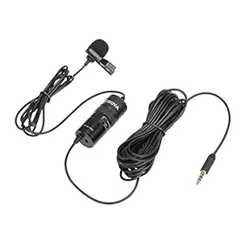
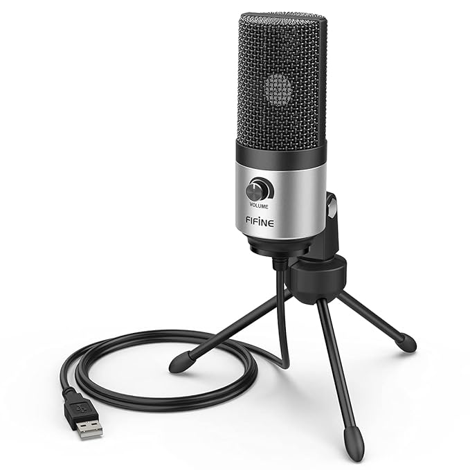
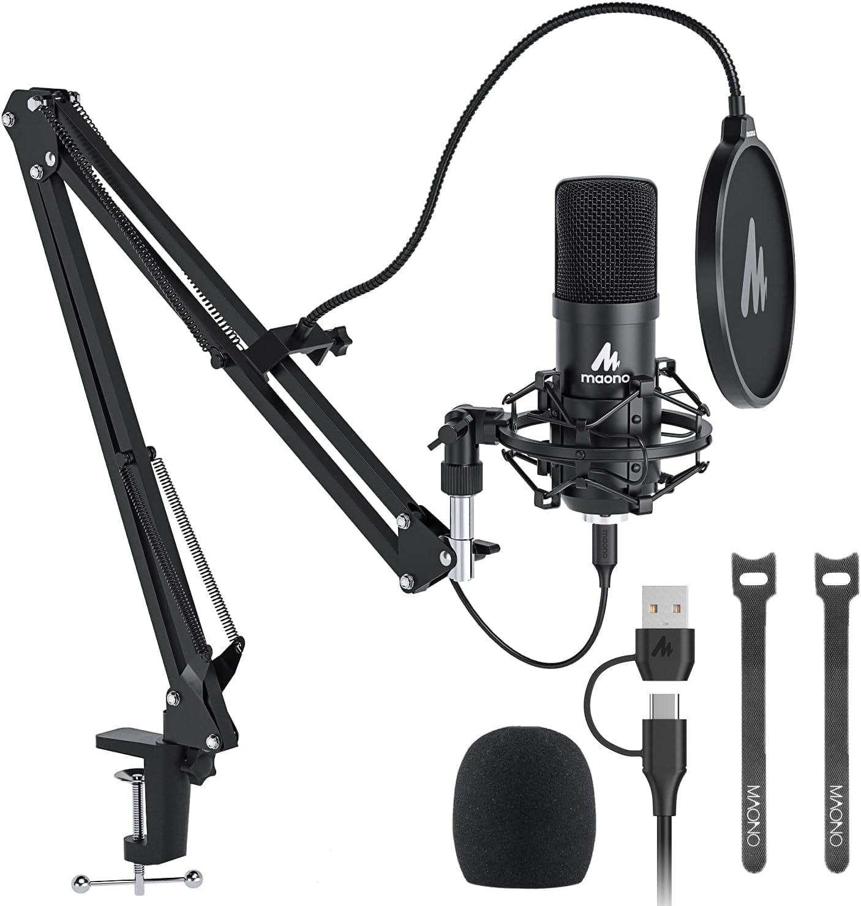
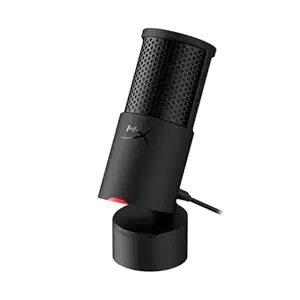
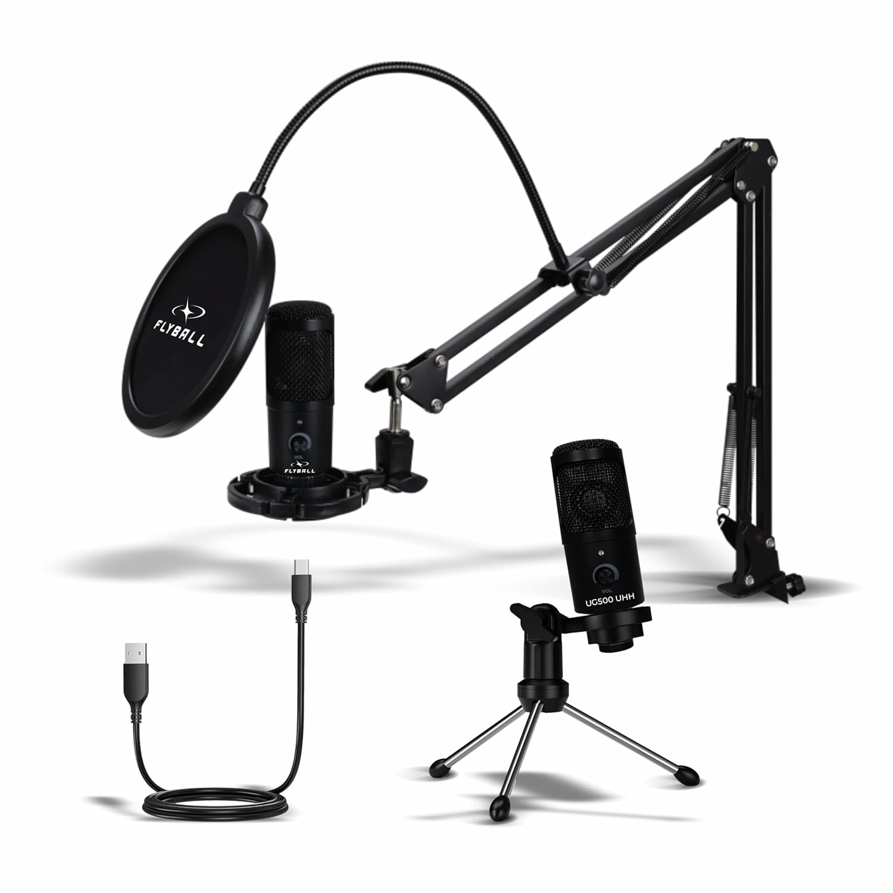
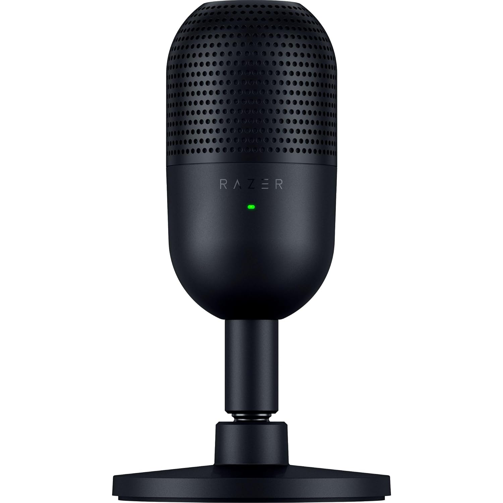
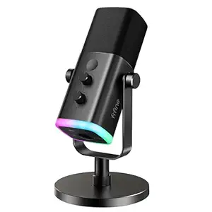

Find the best microphones for YouTube, podcasts, streaming, gaming and professional content creation. Compare budget, mid-range and premium microphones in one place.
Clear audio is one of the biggest factors in producing professional-looking YouTube videos, podcasts and livestreams. Whether you're just starting out or upgrading your setup, choosing the right microphone can significantly improve your content quality.
Different microphones serve different purposes. USB microphones are perfect for beginners because they're easy to use. XLR microphones provide professional sound quality when paired with an audio interface. Lavalier microphones are ideal for mobile creators and interviews. Dynamic microphones work well in noisy environments, while condenser microphones capture more detail in quiet rooms.
Perfect microphones for beginners, students and new creators.

Best Budget
✔ Lavalier Microphone
✔ Smartphone & DSLR Compatible
✔ Excellent Voice Quality
✔ Great for YouTube & Interviews

Editor's Pick
✔ USB Plug & Play
✔ Perfect for YouTube
✔ Podcast Ready
✔ Excellent Value

Popular
✔ USB Condenser Mic
✔ Boom Arm Included
✔ Studio Sound
✔ Beginner Friendly

Top Choice
✔ USB Microphone
✔ Tap-to-Mute
✔ Excellent Voice Quality
✔ Ideal for Streaming
Choose the Boya BY-M1 if you mainly record using a smartphone.
USB microphones like the FIFINE K669B work instantly without extra software.
The Maono AU-A04 kit includes accessories that help you build a professional setup quickly.
HyperX SoloCast offers excellent sound quality with a convenient mute button.
Excellent choices for YouTubers, podcasters and streamers who want better audio quality.

Popular
✔ USB Plug & Play
✔ Crystal Clear Audio
✔ Perfect for YouTube
✔ Beginner Friendly

Best Seller
✔ Compact Design
✔ Supercardioid Pickup
✔ USB Connection
✔ Great for Streaming

Editor's Choice
✔ USB + XLR
✔ RGB Lighting
✔ Excellent Sound
✔ Streaming Ready
If you're buying your **first YouTube microphone**, we recommend the FIFINE K669B for its value and ease of use. If you're upgrading your setup, the Blue Yeti is one of the best all-round USB microphones. For professionals, the Shure MV7 delivers outstanding broadcast-quality sound and supports both USB and XLR connections.
Compare popular microphones to find the best one for your needs.
| Microphone | Type | Connection | Best For | Price |
|---|---|---|---|---|
| Boya BY-M1 | Lavalier | 3.5mm | Mobile Videos | ₹700+ |
| FIFINE K669B | USB Condenser | USB | YouTube Beginners | ₹2,500+ |
| Maono AU-A04 | USB Condenser | USB | Podcast | ₹3,500+ |
| Blue Snowball | USB Condenser | USB | Streaming | ₹4,500+ |
| Blue Yeti | USB Condenser | USB | Professional YouTube | ₹11,000+ |
| Shure MV7 | Dynamic | USB + XLR | Professional Studio | ₹20,000+ |
USB Microphones connect directly to your computer and are ideal for beginners.
XLR Microphones require an audio interface or mixer but deliver professional-grade sound quality.
Condenser microphones capture detailed sound and work best in quiet rooms.
Dynamic microphones reject background noise better, making them ideal for live streaming and noisy environments.
Always monitor your audio while recording to catch unwanted noise.
Reduce fans, traffic noise and echoes for cleaner recordings.
A pop filter reduces harsh "P" and "B" sounds, improving voice quality.
Stay about 15–20 cm from the microphone for balanced audio.
The FIFINE K669B and Maono AU-A04 are excellent choices because they're affordable, easy to use and provide great sound quality.
If you're just starting, choose a USB microphone. If you're building a professional studio, consider an XLR microphone with an audio interface.
Yes. It's one of the best budget lavalier microphones for smartphones, DSLRs and beginner YouTubers.
The Blue Yeti, Rode NT-USB and Shure MV7 are among the best podcast microphones available.
Yes. A pop filter helps reduce popping sounds and improves overall voice quality.
FIFINE K669B, Blue Snowball and HyperX SoloCast offer excellent value in this price range.
Many USB microphones work with Android phones using an OTG adapter. Always check the manufacturer's compatibility information first.
A quality microphone can last for many years if handled carefully and stored properly.
Some links on this page are affiliate links. If you purchase a product through these links, VidToolkit Pro may earn a small commission at no extra cost to you. This helps support our website and allows us to continue creating free content and product recommendations.
Choose the perfect microphone and start creating better videos, podcasts and livestreams today.
Explore More Creator Gear →